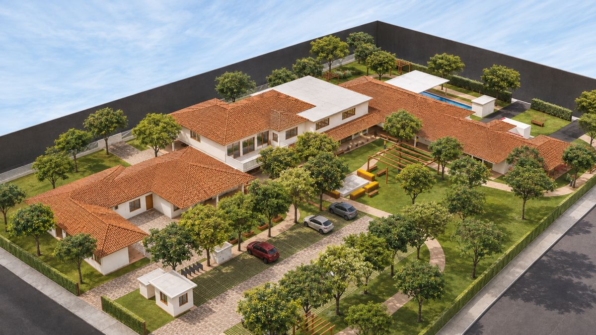
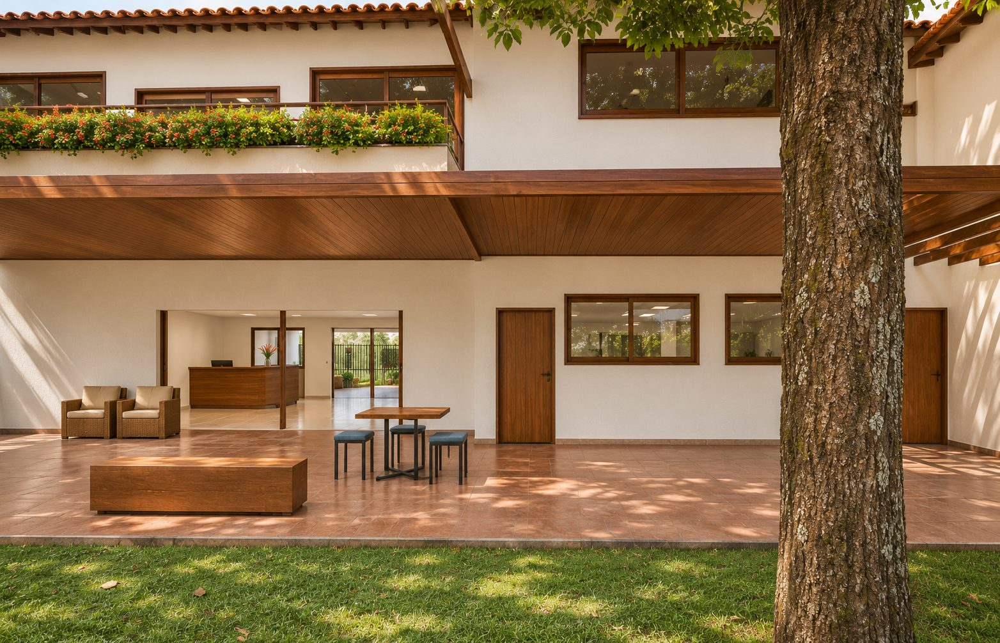
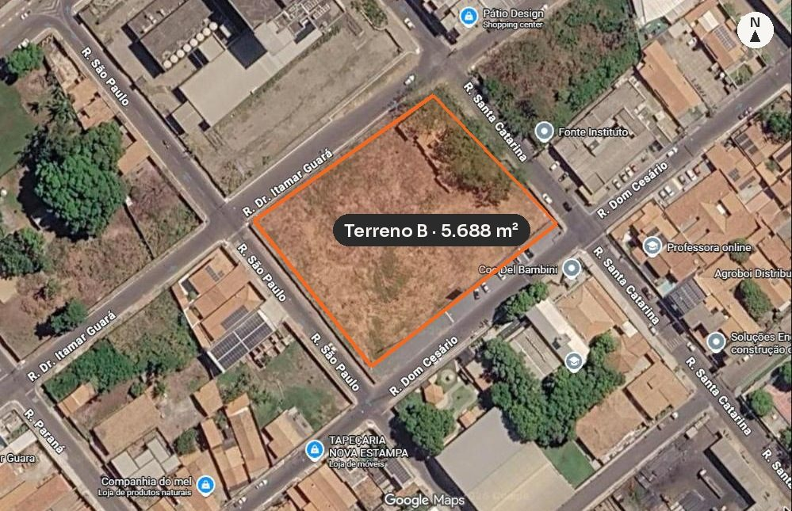
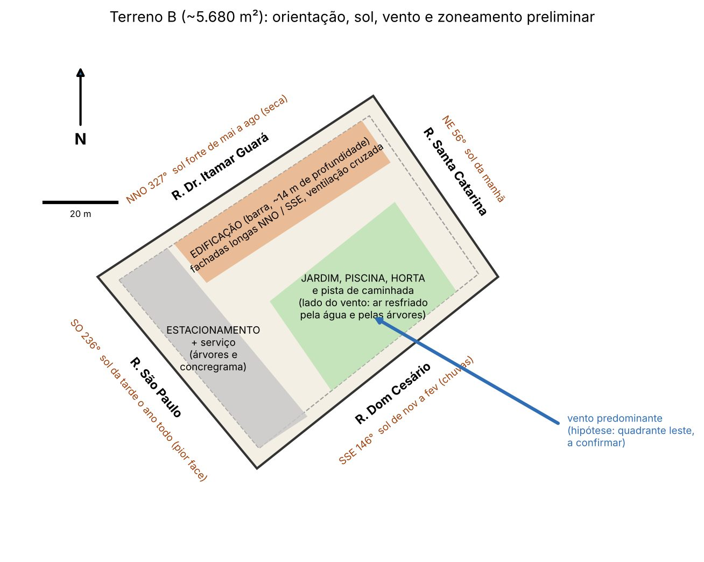
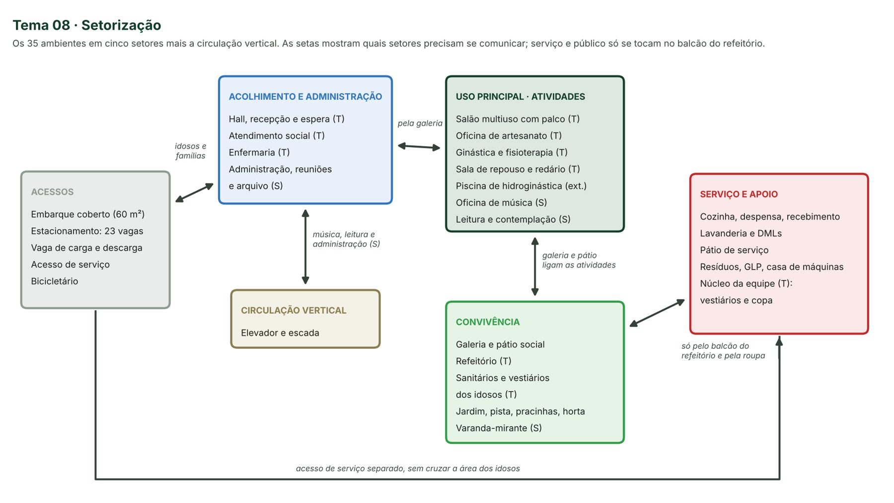
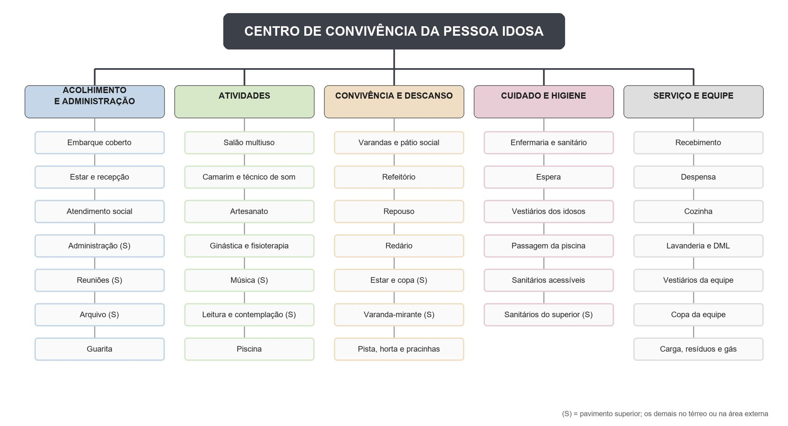
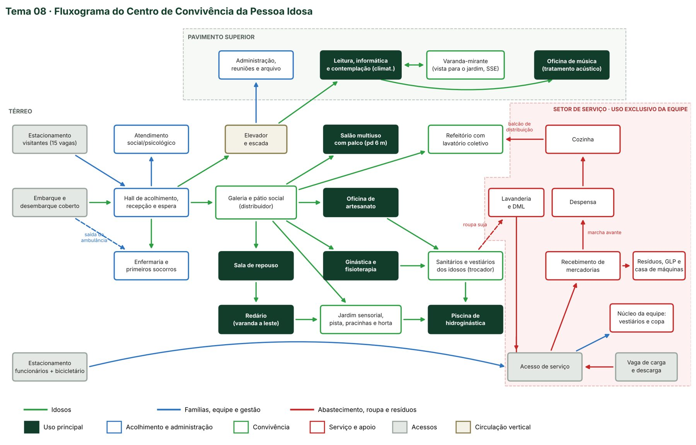
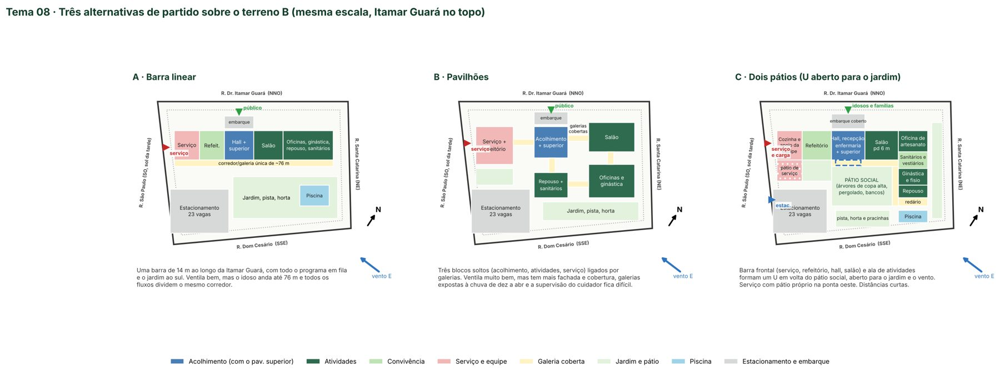
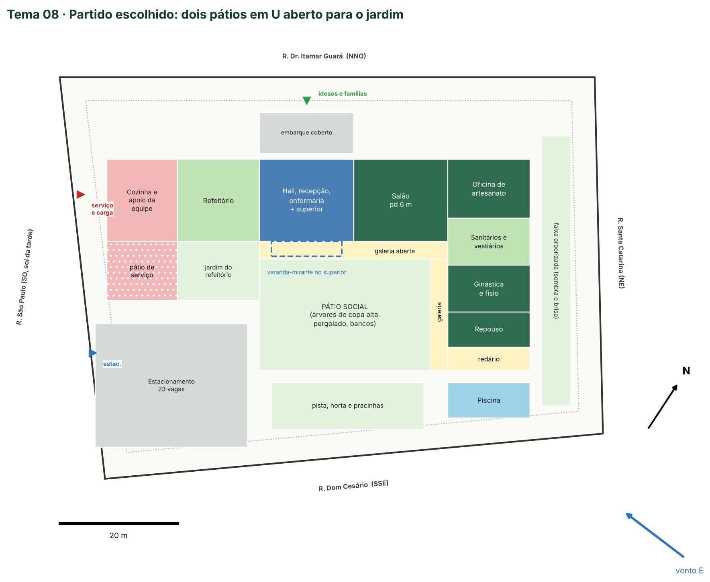
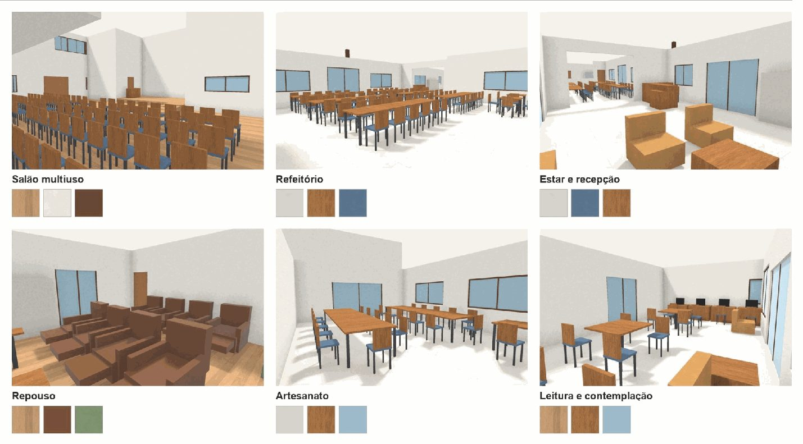

Centro de Convivência da Pessoa Idosa
Escolha um ponto de vista ou arraste para girar; o corte mostra o térreo por dentro. Role a página para ver o projeto completo.
Arraste para girar, role ou pince para aproximar, botão direito ou dois dedos para mover. Cores, vegetação e veículos são ilustrativos. Ver o projeto ↓

Centro de Convivência da Pessoa Idosa
Um centro-dia para 80 idosos pensado como uma casa com quintal: varandas no lugar de corredores, pátio de convivência e um bosque em volta.
Casa com quintal
O centro funciona como centro-dia: o idoso chega às 7h30, passa o dia em atividades, refeições, cuidado e descanso, e volta para casa às 17h30. Por isso não há dormitórios.
O idoso chega pela varanda, convive em volta do pátio e caminha à sombra do quintal.
A ideia vem da casa maranhense, que vive na varanda, na rede e no quintal. O programa pede um lugar que pareça casa e não clínica, com convivência ao ar livre e proteção do sol. O conceito aparece em três elementos: a galeria (a varanda), o pátio social (o terreiro de encontro) e o jardim com pista, horta, piscina e redário (o quintal).
A acessibilidade da NBR 9050 conduz o desenho: rota acessível contínua e coberta, portas largas, apoios, luz natural e sanitários a menos de 50 m de qualquer atividade. O percurso mais longo do idoso tem cerca de 45 m.

Pátio social visto do jardim, com as varandas em balanço.
Uma quadra inteira no Maranhão Novo
Limitada pela R. Dr. Itamar Guará, R. Santa Catarina, R. Dom Cesário e R. São Paulo, a uma quadra da Av. Bernardo Sayão. As quatro frentes separam o acesso público, o serviço, o estacionamento e a emergência.

Vista de satélite da quadra, com o norte para cima. Imagem: Google, 2026.
| Parâmetro (LC 003/2004 · ZRMN) | Exigido | Projeto |
|---|---|---|
| Uso E1.5 · assistência social | permitido | ATENDE |
| Área total de edificação (ATME) | até 180% | 29,4% |
| Área livre mínima | 40% | 73,1% |
| Impermeabilização | até 80% | 48,9% |
| Afastamento das frentes | 4,00 m | 4,26 m |
| Gabarito | 9 pav. | 2 pav. |
| Vagas (art. 41) | 1 / 100 m² | 23 vagas |
| Pé-direito do salão (Lei 197/1978) | 6,00 m | 6,00 m |
Clima quente e úmido, vento de leste
Imperatriz tem máximas médias de cerca de 32 °C, umidade de 70% e chuvas fortes de dezembro a abril. As fachadas longas ficam para norte-noroeste e sul-sudeste; jardim, piscina e redário ficam a leste, para o vento passar pela água e pelas árvores antes de entrar no prédio; o serviço e o estacionamento arborizado ficam a oeste, no sol da tarde.

Orientação do terreno, sol e vento (estudo da equipe).
Cinco setores e 1.039 m² úteis
Cada área saiu do layout dos móveis, com as faixas de uso e de passagem da NBR 9050. T = térreo, S = superior.

Setorização

Organograma

Fluxograma: idosos, equipe e serviço por caminhos separados
Dois pátios em U aberto para o jardim leste
Entre três alternativas (barra linear, pavilhões e dois pátios), a C é a única em que o conceito aparece inteiro, os fluxos de idosos e de serviço não se cruzam e nenhum ambiente fica a mais de 50 m do salão ou dos sanitários.

As três alternativas sobre o terreno, na mesma escala.

Partido escolhido.

Materiais de casa: reboco off-white, telha cerâmica, madeira cumaru, piso terracota e uma cor por ala para o idoso se localizar.
Um dia no centro, de setor em setor
Na ordem em que o idoso percorre o centro: chega pela frente, passa pelo estar, refeitório e salão, segue pela varanda até as oficinas, a piscina e o cuidado, e termina no andar de cima e no serviço.
O projeto visto de cima e em corte
Plantas e isometrias tiradas da maquete, com o mobiliário das pranchas de layout.
Doze pranchas A2
Implantação, plantas baixas, layout, cobertura, cortes e fachadas, cada uma com planta-chave. Clique para abrir em tela cheia e clique de novo para ampliar. Nas medidas, valem as pranchas.
Os arquivos completos em PDF
Os mesmos arquivos entregues ao professor, nomeados como pede o roteiro.